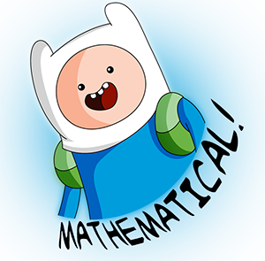
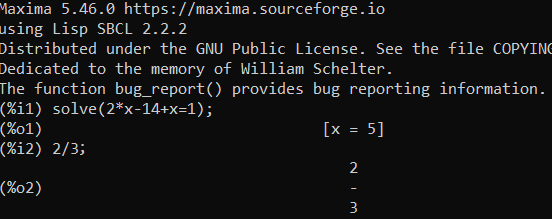
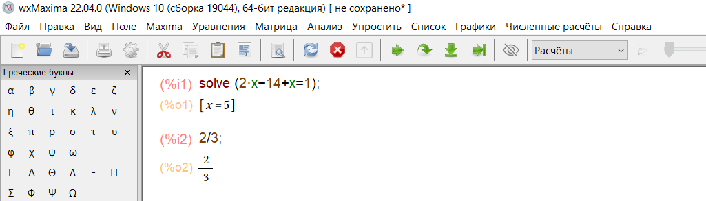
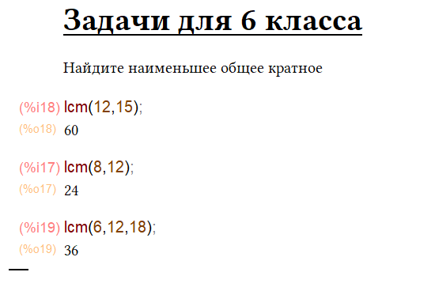
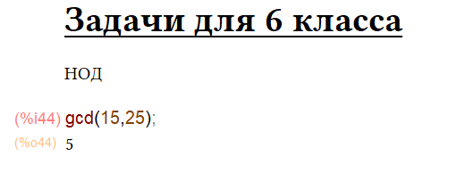
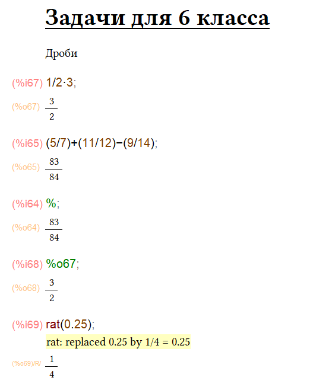
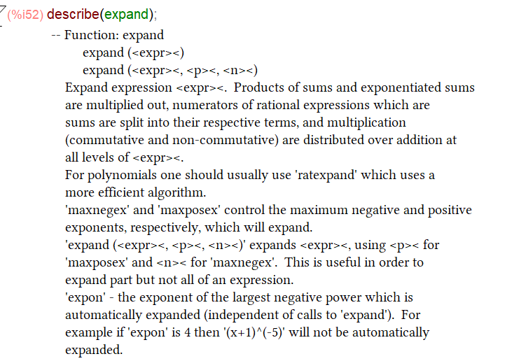
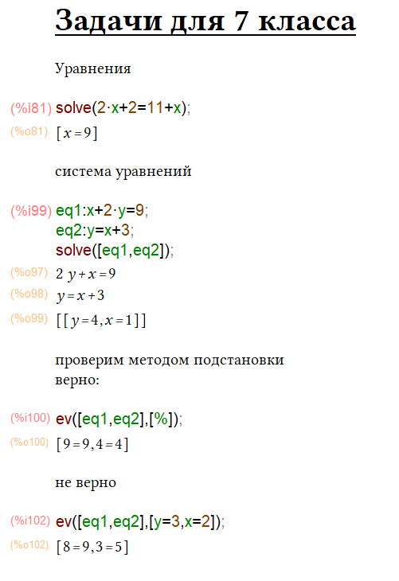
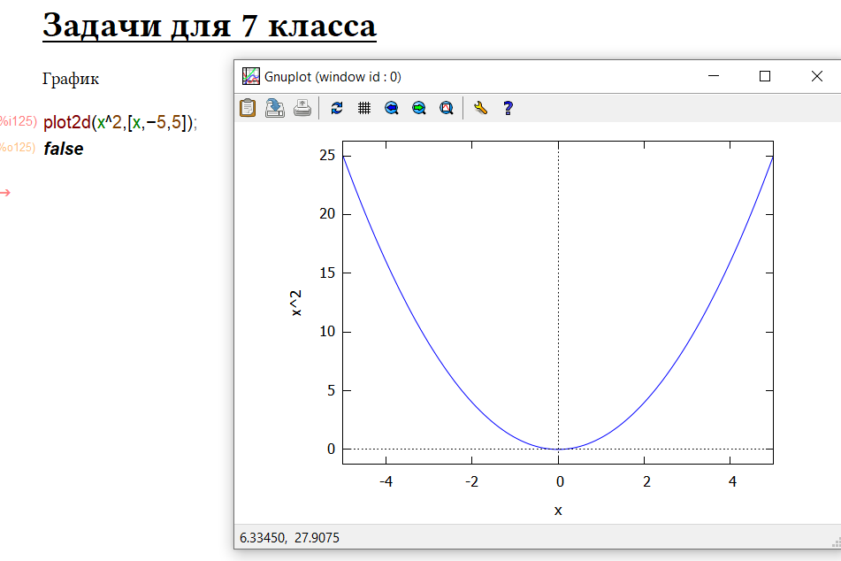

Практически 10 лет и 50 статей назад, я набросал материал о моём знакомстве с замечательной системой компьютерной алгебры Maxima. Время шло, ничто не предвещало беды, но неожиданно я осознал, что дети имеют свойство взрослеть и скоро я не смогу решать школьные задачки в уме.
Пришло время сдуть пыль с "комплюхтера", установить себе Maxima и попутно еще раз напомнить сообществу о ней.
Сегодня не будем всё усложнять. Мы рассмотрим простейшие примеры для 6 и 7 классов по следующим темам:
Оглавление
Начать стоит как обычно с дисклеймера. Я не гуру в области компьютерной алгебры в целом и Maxima в частности, просто в счастливую институтскую пору ковырял её из любопытства, в надежде компенсировать свои слабые стороны в математике. Поэтому, всё в этой статье не является истинной в последней инстанции.
Maxima это система компьютерной алгебры с открытым исходным кодом, которая более-менее активно развивается. Максима позволяет решать задачи так как будто вы на уроке математики. Например, когда я пытался пройти курс по машинному обучению и застрял на том, что не могу найти частную производную, эта распрекрасная чудо-программа меня сильно выручила.Взято с https://www.clipartmax.com/max/m2i8H7H7d3N4b1i8/
Maxima имеет аналоги, но мы сегодня не будем обсуждать, что лучше, а что хуже.
Лучше перейдем к установке приложения.
У Maxima есть сборки, под Windows, Linux, MacOS и даже под Android (но она с 2018 года не развивается). Скачать можно по ссылке. Если не хотите устанавливать, можно использовать одну из Web версий. В данной статье я использовал Maxima 5.46.0.
Вообще Maxima это консольное приложение:
Но я дальше буду использовать графическую надстройку WxMaxima, которая идет в комплекте с пакетом для Windows.Интерфейс выглядит аккуратнее чем 10 лет назад.
Начнем с простейших задач и в процессе познакомимся с системой.
Если вы знакомы с современными языками программирования, скорее всего освоить азы Maxima вам не составит труда, вводим команды и аргументы, можно даже создавать свои функции и переменные.
А если вы стильный, модный, молодежный аналитик данных и видели, как выглядит Jupyter блокнот, то заметите "неуловимое" сходство.Отсылка к видео https://www.youtube.com/watch?v=5tkMi72w8j0&t=76s
В Maxima есть поля разного типа, которые, по сути можно поделить на вычисляемые и информационные (текстовые).
Еще одно важное примечание, чтобы не путать программные функции и математические, в данной статье я буду функции Maxima называть командами.
Давайте без промедлений найдем наименьшее общее кратное двух чисел с помощью команды lcm(). Если вдруг вы забыли, то наименьшее общее кратное это число которое поделиться без остатка на все числа, что мы укажем в аргументах функции lcm().
Как видите можно вводить больше двух аргументов.
lcm(12,15);
lcm(8,12);
lcm(6,12,18);
Чтобы побаловаться самостоятельно вставьте этот код в окно редактора и нажмите "зеленую стрелку" или shift+enter
Перейдем к наибольшему общему делителю. Напомню, что для двух чисел это наибольшее натуральное целое число, на которое эти числа делятся без остатка.
В Maxima для нахождения НОД мы используем команду gcd()
gcd(15,25);
К сожалению, использовать три аргумента в этой команде нельзя.
Действия с дробями.
С дробями можно проводить все привычные арифметические действия, а еще можно переводить десятичные дроби в обыкновенные командой rat().
При работе с дробями есть один недостаток если вы хотите написать смешанную дробь например:
То придется слегка "поплясать с бубном" (в интернете есть советы).
Код из примера:
1/2*3;
(5/7)+(11/12)-(9/14);
%;
%o67;
rat(0.25);
Обратите внимание в Maxima можно ссылаться на предыдущие результаты ввода данных и вывода.
Если просто вставить "%" вернется последний ответ.
А если написать "%o67" то вернется ответ конкретно из ячейки 67, даже если его не видно на экране (при условии что он был ранее рассчитан)
Чтобы не раздувать статью, дальше пойдём чуть быстрее.
Начнем с упрощения выражений.
Давайте в этот раз разберем каждый блок отдельно
(5*x^2+x)/x;
Я специально описал выражение отдельно, чтобы вы смогли посмотреть, как Maxima создает символьную форму записи для выражения.
rat(%);
команда rat() упрощает рациональные выражение (дроби). В данном случае мы подставляем в неё предшествующий ответ.
factor(2x^2+2x);
Вынесет нам общий множитель за скобки.
выраж:a^2+2ab+b^2;
factor(выраж);
В Maxima можно задать переменные с помощью записи имя_переменной:значение
Как видите можно использовать и русскоязычные переменные (хотя наверное все же не желательно).
ab:(a+b)*(a+b);
Создадим англоязычную переменную
И раскроем скобки командой expand(ab)
Кстати, можно получить справку о команде не выходя из Maxima, с помощью describe(команда).
Давайте перейдем к уравнениям.
Уравнения и системы уравнений решает волшебная команда solve().
solve(2*x+2=11+x);
Решит наше простое уравнение.
eq1:x+2*y=9;
eq2:y=x+3;
solve([eq1,eq2]);
А вот тут уже интересней. В переменные мы задаем два уравнения, а потом передаем их в команду solve в качестве массива (в квадратных скобках через запятую).
Мы можем проверить решение уравнения, подставив в уравнение полученные значения.
ev([eq1,eq2],[%]);
В этом случае мы вставляем верный ответ.
ev([eq1,eq2],[y=3,x=2]);
А в этом взятые "с потолка" значения. Как видим правая и левая половины уравнения не сходятся.
Ну и последнее, чисто для затравки это графики, я не буду разбирать подробно, оставлю на другой раз ибо много нюансов.
Просто продемонстрирую, что Maxima умеет рисовать графики (в данном случае двухмерный):Пример графика параболы
На самом деле множество задач, что я показал в статье можно решить с помощью кучи альтернативных инструментов, Интернет просто пестрит сервисами как найти НОД и НОК онлайн, есть инструменты для построения графиков, есть SymPy для Python и так далее.
Но мне кажется, что знать о существовании Maxima полезно и взрослым, и школьникам.
Для решения базовых задач этот простой инструмент не требует навыков программирования, но при этом в будущем может стать первым шагом к освоению языков программирования и пониманию их изначальной связи с математикой.